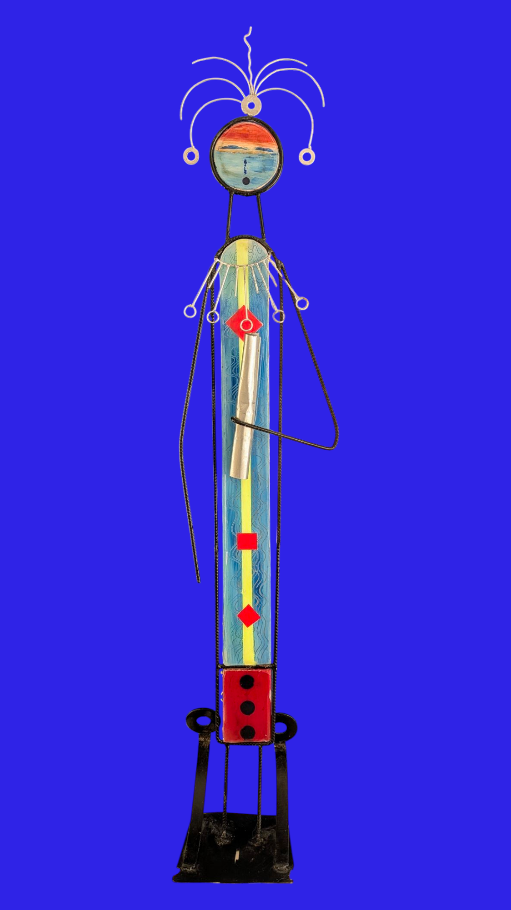
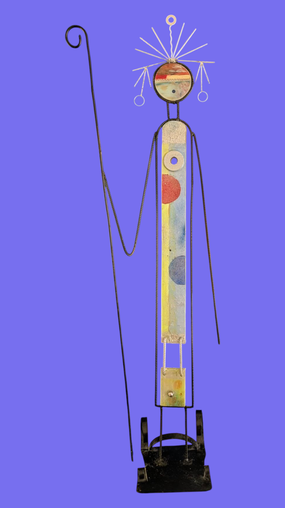
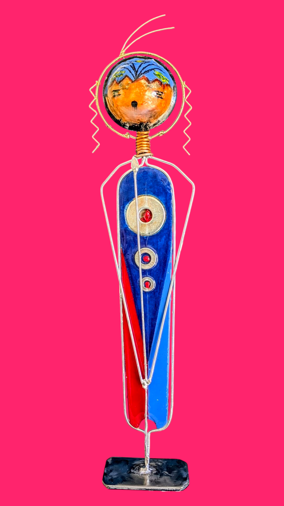
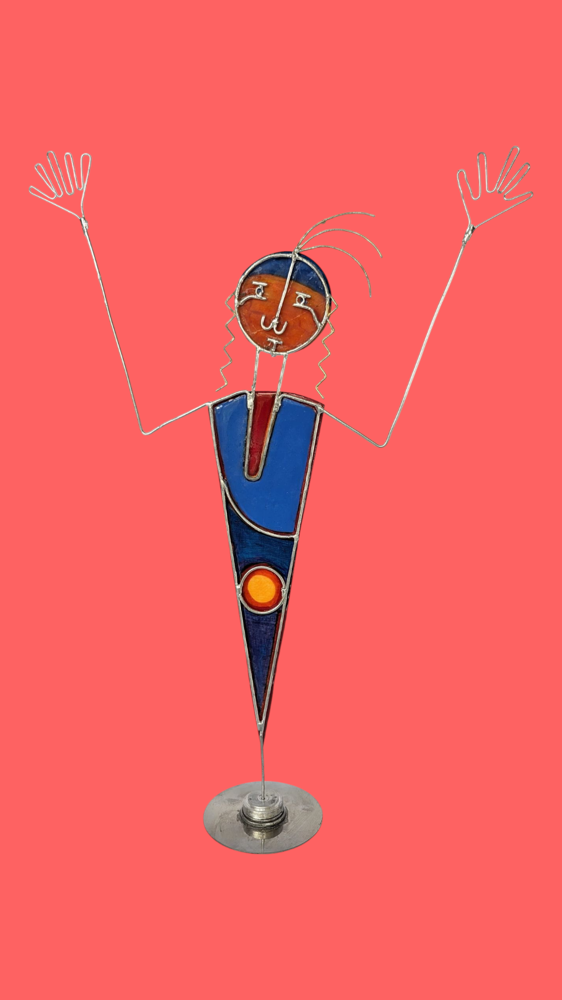
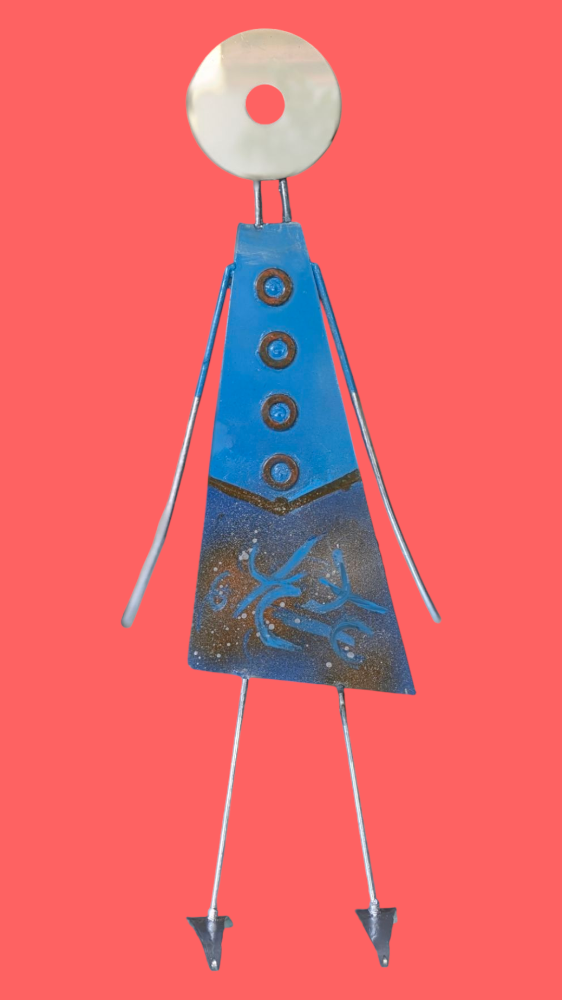
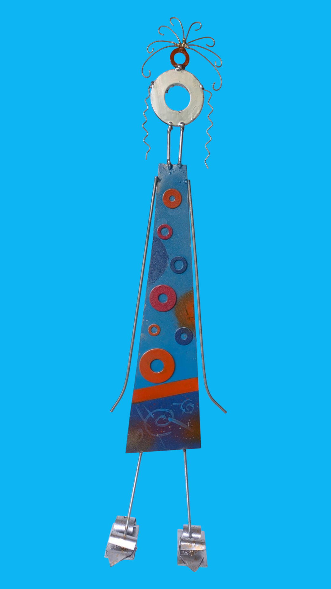
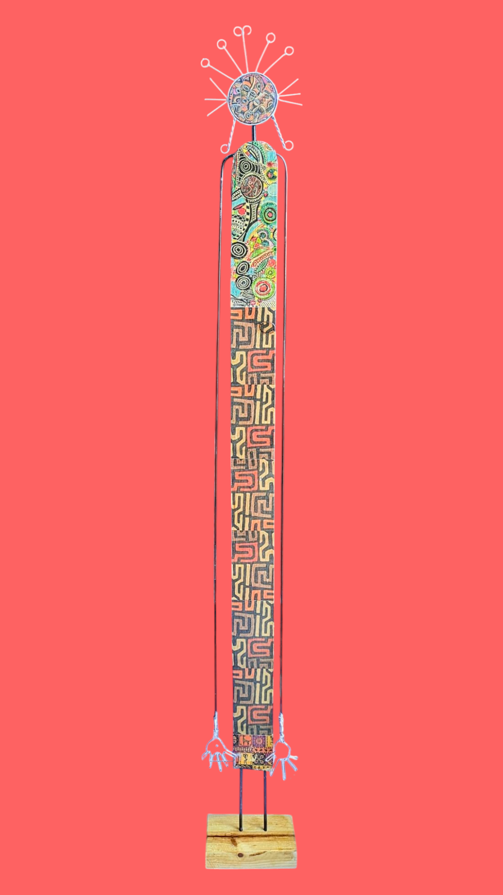

Las diez figuras
10 figuras

I
Uno
Chapa de acero inoxidable · pintada a mano

II
Dos
Madera de pino · barras de hierro · epoxi

III
Tres
Madera de pino · barras de hierro · epoxi

IV
Cuatro
Colador reciclado · alambres · madera de pino · epoxi

V
Cinco
Madera de pino · hierro · fototransferencia africana

VI
Seis
Técnica mixta · materiales reciclados · epoxi

VII
Siete
Técnica mixta · materiales reciclados · epoxi

VIII
Ocho
Técnica mixta · materiales reciclados · epoxi

IX
Nueve
Técnica mixta · materiales reciclados · epoxi

X
Diez
Técnica mixta · materiales reciclados · epoxi